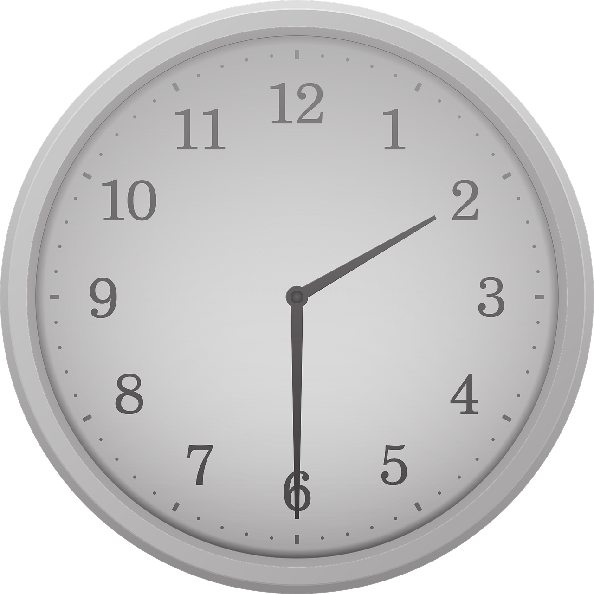

몇 시 몇 분 알아보기

(1) 5분 단위의 시각
- 시계의 긴바늘이 가리키는 수가 1이면 5분, 2이면 10분, 3이면 15분, 4이면 20분, ......을 나타냅니다.
위 시계가 가르키는 시간은 2시 30분 입니다.
(2) 1분 단위의 시각
- 시계에서 긴바늘이 가리키는 작은 눈금 한 칸 1분을 나타냅니다.
여러 가지 방법으로 시각 읽기
시계가 나타내는 시각을 알아봅시다.
위 시계가 가르키는 시간은 2시 30분 입니다.
2시 30분을 3시 30분 전이라고도 합니다.
1시간 알아보기
시계의 긴 바늘이 한 바퀴 도는데 60분의 시간이 걸립니다.1시간은 60분입니다.
1시간 = 60분
하루의 시간 알아보기
하루는 24시간입니다.1일 = 24시간
전날 밤 12시부터 낮 12시까지를 오전이라고 하고, 낮 12시부터 밤 12시까지를 오후라고 합니다.
달력 알아보기
같은 요일이 돌아오는데 걸리는 기간을 1주일이라고 합니다.1주일은 7일 입니다.
1주일 = 7일
1주일은 일요일, 월요일, 화요일, 수요일, 목요일, 금요일, 토요일의 순서로 되어 있고, 같은 요일은 7일마다 반복됩니다.
1년은 12개월 입니다.
1년 = 12개월